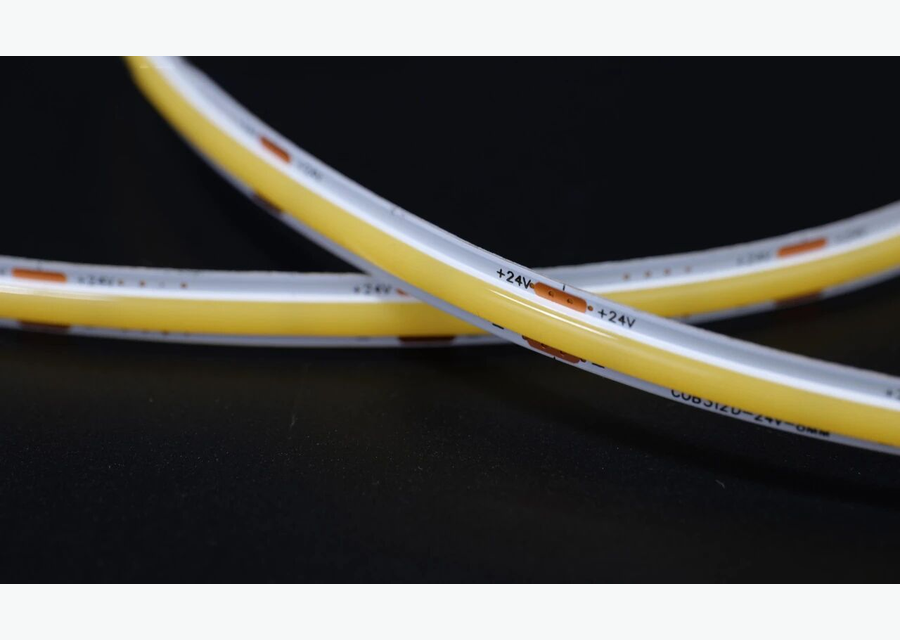
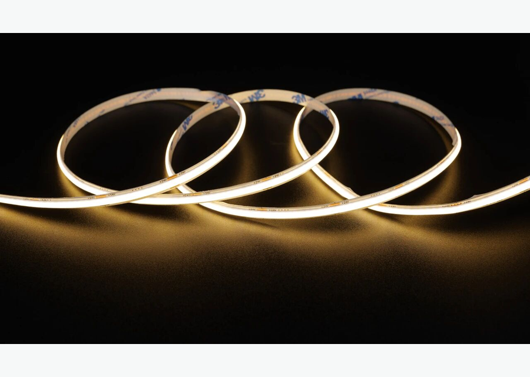
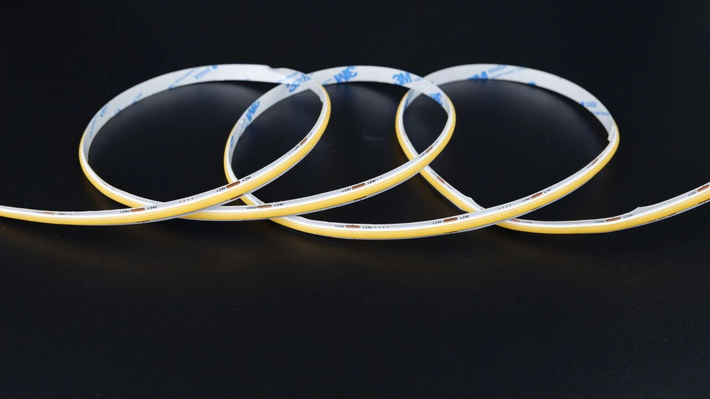

COB 4000K para cozinha
Luz neutra para bancada, armários e área de preparo.
4000Kcozinhafuncional
Ver detalhes

Produto COB • luz neutra
Fita LED COB 4000K para quem precisa de luz neutra, leitura visual clara e linha contínua em cozinhas, vitrines, armários, bancadas, lojas e áreas de trabalho.
Keyword map
Principal: fita led cob 4000k. Secundárias: fita de led cob 4000k, fita led 4000k, fita cob 24v 4000k, fita led para vitrine. Esta página segue a lógica do mapa: uma URL canônica por cluster, sem separar variações que não tenham intenção própria.
Modelos COB
Estrutura de categoria inspirada em sites líderes: navegação clara, cards por variação, guia técnico, aplicações e FAQ, com texto original em português do Brasil.
Luz neutra para bancada, armários e área de preparo.

Iluminação contínua para destacar produto sem pontos fortes.

Boa combinação com perfil de alumínio e difusor em linhas técnicas.
Guia técnico
A temperatura 4000K fica entre a luz quente e a luz fria. Por isso, é uma escolha segura para cozinhas, vitrines, lojas, armários e áreas de trabalho, onde o comprador precisa enxergar cores e detalhes sem deixar o ambiente frio demais. Em vitrines, combine a COB 4000K com perfil de alumínio para controlar direção, brilho e acabamento. Em trechos contínuos, distribua a alimentação para manter a luz uniforme.
Aplicações
Aplicações alinhadas aos clusters do mapa: sanca/gesso, cozinha/armário, loja/vitrine, quarto e ambientes comerciais.
Luz neutra sob prateleiras, bancadas e marcenaria.
Planejar aplicaçãoDestaque de produtos com linha contínua e discreta.
Planejar aplicaçãoIluminação de apoio em nichos, painéis e mobiliário.
Planejar aplicaçãoFAQ técnico
Respostas curtas para intenção comercial e dúvidas de especificação antes do orçamento.
Sim. Em geral, 4000K é percebido como branco neutro e funciona bem em áreas funcionais.
Sim. Ela oferece leitura mais neutra de produtos do que 3000K, mantendo aparência confortável.
3000K é mais quente e aconchegante. 4000K é mais neutra e indicada para tarefa, loja e vitrine.
Não é obrigatório, mas o perfil melhora acabamento, proteção e dissipação térmica.
Cotação B2B
Envie metragem, tensão, temperatura de cor, ambiente, perfil desejado e prazo. A resposta deve indicar fita, fonte, perfil, conector e controle compatíveis.